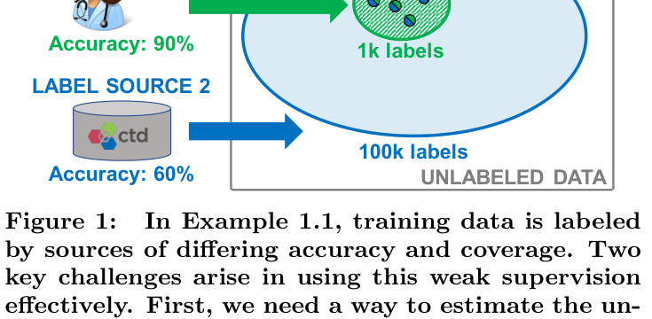
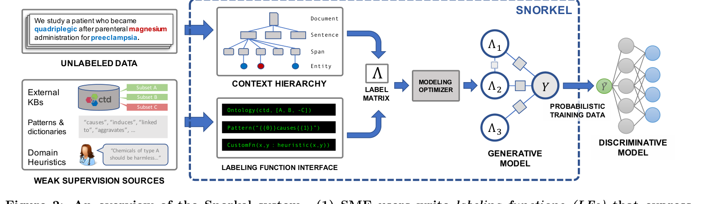
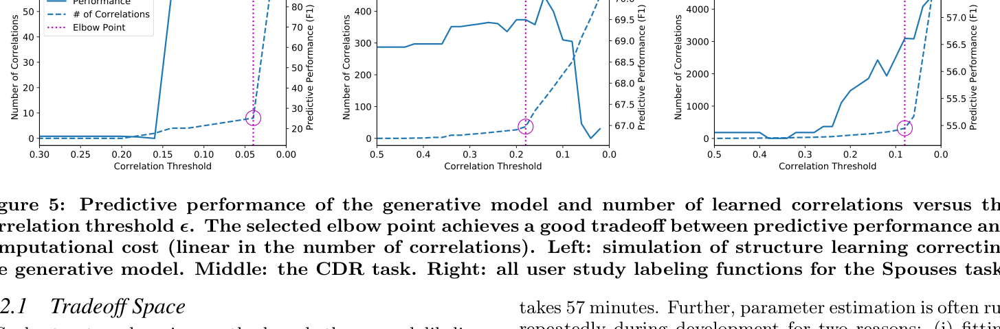
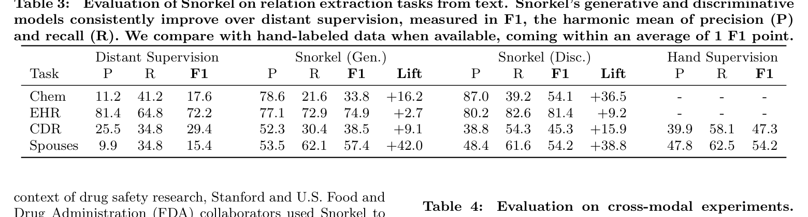
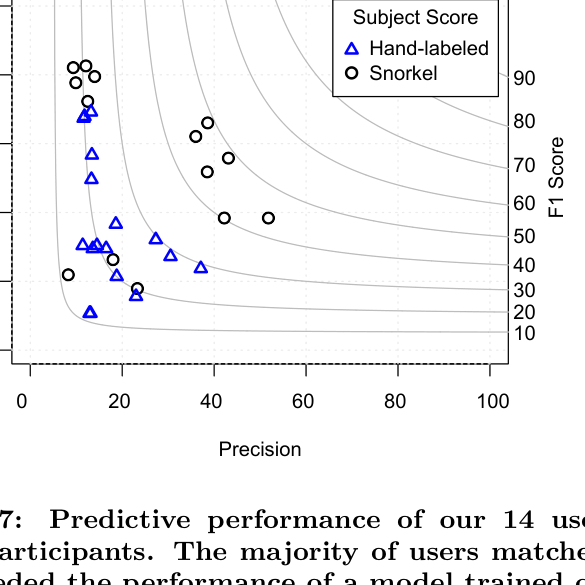

Snorkel: Rapid Training Data Creation with Weak Supervision
一句话总结: Snorkel 把“人工标注训练集”改造成“写 labeling functions + 学一个 label model 去噪 + 训练任意 discriminative model”的流水线,让领域专家用弱监督快速生产概率训练标签,在多个文本、图像、众包任务上显著超过单一 heuristic / distant supervision,并逼近大规模手标数据。
核心流程: 用户写一组 labeling functions $\lambda_j: X \to Y \cup \{\emptyset\}$,Snorkel 在无标样本上得到 label matrix $\Lambda \in (Y \cup \{\emptyset\})^{m \times n}$;label model 估计每个 LF 的准确率、覆盖率与相关性,输出概率标签 $\tilde{Y}$;最终模型只把 $\tilde{Y}$ 当训练标签,结构可以是 LSTM、CNN、ResNet 或其他模型。
必须记住的数字: 用户研究中 SME 建模速度 2.8×,相比 7 小时手标训练让性能平均提升 45.5%;模型策略 optimizer 最高让 pipeline 执行提速 1.8×;整体相对 distant supervision 平均提升 132%,距离大型手标训练集平均只差 3.60%。
面试考点: LF 不是 feature engineering,而是监督信号编程;generative label model 的价值是无 ground truth 估计 source quality 并处理冲突/依赖;probabilistic label 比 hard majority vote 更适合给 downstream model 传递 lineage;Snorkel 的关键工程贡献是把这些做成可迭代系统,而不是只提出一个理论 estimator。
为什么读: 这是弱监督/数据编程经典系统论文。今天做 LLM judge、规则标注、自动化数据清洗、训练样本合成时,本质上仍在回答 Snorkel 的问题:多源 noisy supervision 如何组合、如何估计质量、如何把不确定性传给最终模型。
读法: 先看 Figure 2 的 pipeline,再看 §2 的 formalization,然后看 Table 3/4/5 的结果。理论细节重点记“什么时候 majority vote 足够,什么时候需要 generative model 和 correlation learning”。
- fig_pipeline — Snorkel 三段式流水线: LF interface → generative model → discriminative model。
- fig_results_table — 文本关系抽取主结果,能直接看出 DS baseline、Snorkel gen/disc、hand labels 的差距。
- §2 Architecture — 形式化定义 LF、label matrix 和 probabilistic training labels。
- §4 Evaluation — 六个应用、132% lift、3.60% gap、5.81% label model gain。
- Preamble / 元信息p.1
- Abstract / 摘要p.1
- §1 Introduction / 引言p.1-2
- §2 Snorkel Architecture / 系统架构与 LF 语言p.3-5
- §2.2-2.3 Generative & Discriminative Model / 生成与判别模型p.5
- §3 Weak Supervision Tradeoffs / 弱监督建模取舍p.5-9
- §4 Evaluation / 实验评估p.9-11
- §4.2 User Study / 用户研究p.11-12
- §5-6 Related Work & Conclusion / 相关工作与结论p.12
🖼 图表速览 (5 张) · 点击放大

① 图说明:Source 1 准确率高但覆盖少,Source 2 覆盖大但准确率低;重叠区域有冲突标签。
② 关键数据:图中示意 Source 1 约 1k labels / 90% accuracy,Source 2 约 100k labels / 60% accuracy。
③ 启示:简单 majority vote 会浪费 source 质量差异;Snorkel 要解决的是“无 ground truth 下估计 source reliability,并把这种 lineage 传给最终模型”。

① 图说明:左侧是 unlabeled data 与弱监督源;中间 LF interface 把知识库、模式、heuristic 变成 labeling functions;label matrix 进入 modeling optimizer 和 generative model;输出概率训练数据给 discriminative model。
② 关键结构:Snorkel 本身不限定最终模型。它只负责把 noisy LF outputs 聚合为 probabilistic labels,然后可训练 LSTM、CNN、ResNet 等模型。
③ 启示:这是把“规则/知识库/众包/旧模型”统一抽象成监督源的系统设计。现代 LLM 数据治理里,多 judge、多规则、多打分器融合仍是同一个问题。

① 图说明:三组曲线展示 correlation threshold 降低时,学习到的 LF 相关性数量快速增加,预测性能先升后趋于饱和。
② 关键数据:论文报告 optimizer 能在保留 60%-70% correlation learning 收益的同时,最多节省 61% 训练时间;某些任务可让 pipeline 最高提速 1.8×。
③ 启示:不是所有 LF 依赖都值得建模。系统必须把 label quality 与迭代速度一起优化,否则用户写 LF 的交互循环会变慢。

① 图说明:表格比较 Distant Supervision、Snorkel generative labels、Snorkel discriminative model 和 hand supervision。
② 关键数据:Chem F1 17.6 → 54.1(+36.5),EHR 72.2 → 81.4(+9.2),CDR 29.4 → 45.3(+15.9),Spouses 15.4 → 54.2(+38.8);CDR/Spouses 与 hand labels 只差约 2.0/0.0 F1。
③ 启示:生成式聚合只是中间产物;真正收益来自把概率标签喂给 discriminative model,让模型泛化到 LF 覆盖不到的新样本。

① 图说明:蓝色三角是 7 小时手工标注基线,黑色圆点是 Snorkel 用户构建的模型。
② 关键数据:多数用户匹配或超过 hand-labeled baseline;摘要给出的总体结论是建模速度 2.8×,预测性能平均提升 45.5%。
③ 启示:Snorkel 证明“让 SME 写监督程序”比“让 SME 手标大量样本”更符合迭代式建模。
📖 论文正文(英文原文 + 中文逐字翻译,按章节折叠)
Preamble / 元信息p.1
Authors: Alexander Ratner, Stephen H. Bach, Henry Ehrenberg, Jason Fries, Sen Wu, Christopher Ré. Venue: PVLDB 11(3), 2017. Topic: weak supervision, data programming, rapid training data creation.
Abstract / 摘要p.1
Labeling training data is increasingly the largest bottleneck in deploying machine learning systems. We present Snorkel, a first-of-its-kind system that enables users to train state-of-the-art models without hand labeling any training data. Instead, users write labeling functions that express arbitrary heuristics, which can have unknown accuracies and correlations. Snorkel denoises their outputs without access to ground truth by incorporating the first end-to-end implementation of our recently proposed machine learning paradigm, data programming. We present a flexible interface layer for writing labeling functions based on our experience over the past year collaborating with companies, agencies, and research labs.
标注训练数据正日益成为部署机器学习系统时最大的瓶颈。我们提出 Snorkel,这是一个首创的系统,它使用户无需手工标注任何训练数据即可训练出 state-of-the-art 的模型。取而代之的是,用户编写 labeling functions 来表达任意启发式规则,而这些规则可以有未知的 accuracy 和 correlation。Snorkel 在无法访问 ground truth 的情况下对它们的输出进行去噪,其做法是纳入我们最近提出的机器学习范式 data programming 的首个端到端实现。我们基于过去一年与公司、机构和研究实验室合作的经验,提出了一个用于编写 labeling functions 的灵活的 interface 层。
In a user study, subject matter experts build models 2.8× faster and increase predictive performance an average 45.5% versus seven hours of hand labeling. We study the modeling tradeoffs in this new setting and propose an optimizer for automating tradeoff decisions that gives up to 1.8× speedup per pipeline execution. In two collaborations, with the U.S. Department of Veterans Affairs and the U.S. Food and Drug Administration, and on four open-source text and image data sets representative of other deployments, Snorkel provides 132% average improvements to predictive performance over prior heuristic approaches and comes within an average 3.60% of the predictive performance of large hand-curated training sets.
在一项用户研究中,subject matter experts(领域专家)构建模型的速度快了 2.8×,并且相比七小时的手工标注,predictive performance 平均提高了 45.5%。我们研究了这一新设定下的建模 tradeoff,并提出了一个用于自动化 tradeoff 决策的 optimizer,它使每次 pipeline 执行最多加速 1.8×。在与美国退伍军人事务部(U.S. Department of Veterans Affairs)和美国食品药品监督管理局(U.S. Food and Drug Administration)的两项合作中,以及在代表其他部署场景的四个开源文本与图像数据集上,Snorkel 相比此前的 heuristic 方法在 predictive performance 上平均提升了 132%,并达到与大型手工整理训练集的 predictive performance 平均仅相差 3.60% 的水平。
§1 Introduction / 引言p.1-2
In the last several years, there has been an explosion of interest in machine-learning-based systems across industry, government, and academia, with an estimated spend this year of $12.5 billion. A central driver has been the advent of deep learning techniques, which can learn task-specific representations of input data, obviating what used to be the most time-consuming development task: feature engineering. These learned representations are particularly effective for tasks like natural language processing and image analysis, which have high-dimensional, high-variance input that is impossible to fully capture with simple rules or hand-engineered features. However, deep learning has a major upfront cost: these methods need massive training sets of labeled examples to learn from—often tens of thousands to millions to reach peak predictive performance.
在过去几年里,工业界、政府和学术界对基于机器学习的系统兴趣激增,据估计今年在此方面的支出达 125 亿美元。一个核心驱动力是深度学习技术的出现,它能够学习输入数据的任务特定表示,从而免去了过去最耗时的开发任务:feature engineering。这些学到的表示对于自然语言处理和图像分析这类任务尤其有效——这类任务的输入是高维、高方差的,无法用简单规则或手工设计的 feature 完全刻画。然而,深度学习有一项巨大的前期成本:这些方法需要海量的带标注样本训练集来学习——往往要数万到数百万个样本才能达到 predictive performance 的峰值。
Such training sets are enormously expensive to create, especially when domain expertise is required. For example, reading scientific papers, analyzing intelligence data, and interpreting medical images all require labeling by trained subject matter experts (SMEs). Moreover, we observe from our engagements with collaborators like research labs and major technology companies that modeling goals such as class definitions or granularity change as projects progress, necessitating re-labeling. Some big companies are able to absorb this cost, hiring large teams to label training data. However, the bulk of practitioners are increasingly turning to weak supervision: cheaper sources of labels that are noisier or heuristic. The most popular form is distant supervision, in which the records of an external knowledge base are heuristically aligned with data points to produce noisy labels. Other forms include crowdsourced labels, rules and heuristics for labeling data, and others. While these sources are inexpensive, they often have limited accuracy and coverage.
创建这样的训练集代价极其高昂,在需要领域专业知识时尤其如此。例如,阅读科学论文、分析情报数据、解读医学影像,都需要经过训练的领域专家(subject matter experts,SMEs)来标注。此外,我们从与研究实验室和大型科技公司等合作者的接触中观察到:随着项目推进,诸如类别定义或粒度之类的建模目标会发生变化,从而需要重新标注。有些大公司能够吸收这一成本,雇佣大型团队来标注训练数据。然而,大多数从业者正越来越多地转向 weak supervision:更廉价但更嘈杂或更具启发式的标签来源。最流行的形式是 distant supervision,即将一个外部知识库的记录以启发式方式与数据点对齐,从而产生 noisy labels。其他形式包括众包标签(crowdsourced labels)、用于标注数据的规则和启发式方法,以及其他形式。这些来源虽然廉价,但往往 accuracy 和 coverage 有限。
Ideally, we would combine the labels from many weak supervision sources to increase the accuracy and coverage of our training set. However, two key challenges arise in doing so effectively. First, sources will overlap and conflict, and to resolve their conflicts we need to estimate their accuracies and correlation structure, without access to ground truth. Second, we need to pass on critical lineage information about label quality to the end model being trained.
理想情况下,我们会把来自许多 weak supervision 源的标签组合起来,以提高训练集的 accuracy 和 coverage。然而,要有效地做到这一点会出现两个关键挑战。第一,各个源会重叠和冲突,而要解决它们的冲突,我们需要在无法访问 ground truth 的情况下估计它们的 accuracy 和 correlation 结构。第二,我们需要把关于标签质量的关键 lineage(谱系)信息传递给正在被训练的 end model。
In Example 1.1, we obtain labels from a high accuracy, low coverage Source 1, and from a low accuracy, high coverage Source 2, which overlap and disagree. If we take an unweighted majority vote to resolve conflicts, we end up with null (tie-vote) labels. If we could correctly estimate the source accuracies, we would resolve conflicts in the direction of Source 1. We would still need to pass this information on to the end model being trained. Suppose that we took labels from Source 1 where available, and otherwise took labels from Source 2. Then, the expected training set accuracy would be 60.3%—only marginally better than the weaker source. Instead we should represent training label lineage in end model training, weighting labels generated by high-accuracy sources more.
在 Example 1.1 中,我们从一个高 accuracy、低 coverage 的 Source 1 和一个低 accuracy、高 coverage 的 Source 2 获得标签,二者重叠且存在分歧。如果我们采用无权重的 majority vote 来解决冲突,最终会得到 null(平票)标签。如果我们能正确估计各源的 accuracy,我们就会朝 Source 1 的方向来解决冲突。我们仍然需要把这一信息传递给正在被训练的 end model。假设我们在 Source 1 有标签时取 Source 1 的标签,否则取 Source 2 的标签。那么期望的训练集 accuracy 将是 60.3%——仅比较弱的那个源稍好一点。我们应当做的,是在 end model 训练中体现训练标签的 lineage,对由高 accuracy 源产生的标签赋予更高的权重。
In recent work, we developed data programming as a paradigm for addressing both of these challenges by modeling multiple label sources without access to ground truth, and generating probabilistic training labels representing the lineage of the individual labels. We prove that, surprisingly, we can recover source accuracy and correlation structure without hand-labeled training data. However, there are many practical aspects of implementing and applying this abstraction that have not been previously considered. We present Snorkel, the first end-to-end system for combining weak supervision sources to rapidly create training data.
在最近的工作中,我们提出了 data programming 作为一种范式,通过在无法访问 ground truth 的情况下对多个标签源建模,并生成体现各个标签 lineage 的 probabilistic training labels,来同时应对上述两个挑战。我们证明:出人意料的是,我们可以在没有手工标注训练数据的情况下恢复源的 accuracy 与 correlation 结构。然而,实现和应用这一抽象还有许多实际方面此前从未被考虑过。我们提出 Snorkel,这是首个用于组合 weak supervision 源以快速创建训练数据的端到端系统。
From this experience, we have distilled three principles that have shaped Snorkel's design: 1. Bring All Sources to Bear: The system should enable users to opportunistically use labels from all available weak supervision sources. 2. Training Data as the Interface to ML: The system should model label sources to produce a single, probabilistic label for each data point and train any of a wide range of classifiers to generalize beyond those sources. 3. Supervision as Interactive Programming: The system should provide rapid results in response to user supervision. We envision weak supervision as the REPL-like interface for machine learning.
从这段经验中,我们提炼出塑造了 Snorkel 设计的三条原则:1. 调动所有来源(Bring All Sources to Bear):系统应当使用户能够机会性地利用所有可用的 weak supervision 源的标签。2. 以训练数据作为通往 ML 的接口(Training Data as the Interface to ML):系统应当对标签源建模,为每个数据点产生单一的 probabilistic label,并训练各种各样的分类器以泛化到这些源之外。3. 把监督当作交互式编程(Supervision as Interactive Programming):系统应当对用户的监督快速给出结果。我们设想把 weak supervision 当作机器学习的类 REPL 接口。
Our optimizer correctly predicts the advantage of generative modeling over majority vote to within 2.16 accuracy points on average on our evaluation tasks, and accelerates pipeline executions by up to 1.8×. It also enables us to gain 60%–70% of the benefit of correlation learning while saving up to 61% of training time (34 minutes per execution). We report on two deployments of Snorkel, in collaboration with the U.S. Department of Veterans Affairs and Stanford Hospital and Clinics, and the U.S. Food and Drug Administration, where Snorkel improves over heuristic baselines by an average 110%. We also report results on four open-source datasets on which Snorkel beats heuristics by an average 153% and comes within an average 3.60% of the predictive performance of large hand-curated training sets.
在我们的评估任务上,我们的 optimizer 平均能在 2.16 个 accuracy 点的误差内正确预测出 generative modeling 相对 majority vote 的优势,并使 pipeline 执行最多加速 1.8×。它还使我们能够在节省最多 61% 训练时间(每次执行 34 分钟)的同时,获得 correlation learning 60%–70% 的收益。我们报告了 Snorkel 的两项部署:一项是与美国退伍军人事务部、斯坦福医院与诊所(Stanford Hospital and Clinics)合作,另一项是与美国食品药品监督管理局合作;在这些部署中,Snorkel 相比 heuristic baselines 平均提升 110%。我们还报告了在四个开源数据集上的结果,在这些数据集上 Snorkel 相比 heuristics 平均高出 153%,并达到与大型手工整理训练集的 predictive performance 平均仅相差 3.60% 的水平。
§2 Snorkel Architecture / 系统架构与 LF 语言p.3-5
Snorkel's workflow is designed around data programming, a fundamentally new paradigm for training machine learning models using weak supervision, and proceeds in three main stages (Figure 2): 1. Writing Labeling Functions: Rather than hand-labeling training data, users of Snorkel write labeling functions, which allow them to express various weak supervision sources such as patterns, heuristics, external knowledge bases, and more. 2. Modeling Accuracies and Correlations: Next, Snorkel automatically learns a generative model over the labeling functions, which allows it to estimate their accuracies and correlations. This step uses no ground-truth data, learning instead from the agreements and disagreements of the labeling functions. We observe that this step improves end predictive performance 5.81% over Snorkel with unweighted label combination.
Snorkel 的工作流围绕 data programming 设计——这是一种使用 weak supervision 训练机器学习模型的全新范式——并分为三个主要阶段(Figure 2):1. 编写 Labeling Functions:Snorkel 的用户不再手工标注训练数据,而是编写 labeling functions,这使他们能够表达各种 weak supervision 源,例如 patterns、heuristics、外部知识库等。2. 对 Accuracies 和 Correlations 建模:接下来,Snorkel 在这些 labeling functions 上自动学习一个 generative model,从而估计它们的 accuracy 和 correlation。这一步不使用任何 ground-truth 数据,而是从 labeling functions 的一致与分歧中学习。我们观察到,相比采用无权重标签组合的 Snorkel,这一步使最终的 predictive performance 提升了 5.81%。
3. Training a Discriminative Model: The output of Snorkel is a set of probabilistic labels that can be used to train a wide variety of state-of-the-art machine learning models, such as popular deep learning models. While the generative model is essentially a re-weighted combination of the user-provided labeling functions—which tend to be precise but low-coverage—modern discriminative models can retain this precision while learning to generalize beyond the labeling functions, increasing coverage and robustness on unseen data.
3. 训练一个 Discriminative Model:Snorkel 的输出是一组 probabilistic labels,可用于训练各种各样的 state-of-the-art 机器学习模型,例如流行的深度学习模型。generative model 本质上是用户提供的 labeling functions 的重新加权组合——这些 labeling functions 往往 precise 但 coverage 低——而现代的 discriminative models 能够在保留这种 precision 的同时,学会泛化到 labeling functions 之外,从而在未见数据上提高 coverage 和鲁棒性。
Setup: Our goal is to learn a parameterized classification model $h_\theta$ that, given a data point $x \in X$, predicts its label $y \in Y$, where the set of possible labels $Y$ is discrete. For simplicity, we focus on the binary setting $Y = \{-1, 1\}$, though we include a multi-class application in our experiments. In a traditional supervised learning setup, we would learn $h_\theta$ by fitting it to a training set of labeled data points. However, in our setting, we assume that we only have access to unlabeled data for training. We do assume access to a small set of labeled data used during development, called the development set, and a blind, held-out labeled test set for evaluation. These sets can be orders of magnitudes smaller than a training set, making them economical to obtain.
问题设定:我们的目标是学习一个带参数的分类模型 $h_\theta$,使其在给定数据点 $x \in X$ 时预测其标签 $y \in Y$,其中可能标签的集合 $Y$ 是离散的。为简单起见,我们聚焦于二分类设定 $Y = \{-1, 1\}$,不过我们在实验中也包含了一个多分类应用。在传统的监督学习设定中,我们会通过把 $h_\theta$ 拟合到一个带标注数据点的训练集来学习它。然而,在我们的设定中,我们假设训练时只能访问无标注数据。我们确实假设可以访问一小组在开发期间使用的带标注数据,称为 development set,以及一个盲测、留出的带标注 test set 用于评估。这些集合可以比训练集小若干个数量级,因而获取起来很经济。
The user of Snorkel aims to generate training labels by providing a set of labeling functions, which are black-box functions, $\lambda : X \to Y \cup \{\emptyset\}$, that take in a data point and output a label where we use $\emptyset$ to denote that the labeling function abstains. Given $m$ unlabeled data points and $n$ labeling functions, Snorkel applies the labeling functions over the unlabeled data to produce a matrix of labeling function outputs $\Lambda \in (Y \cup \{\emptyset\})^{m \times n}$. The goal of the remaining Snorkel pipeline is to synthesize this label matrix $\Lambda$—which may contain overlapping and conflicting labels for each data point—into a single vector of probabilistic training labels $\tilde{Y} = (\tilde{y}_1, ..., \tilde{y}_m)$, where $\tilde{y}_i \in [0, 1]$. These training labels can then be used to train a discriminative model.
Snorkel 的用户旨在通过提供一组 labeling functions 来生成训练标签,这些 labeling functions 是黑盒函数 $\lambda : X \to Y \cup \{\emptyset\}$,它们接收一个数据点并输出一个标签,其中我们用 $\emptyset$ 表示该 labeling function abstain(弃权)。给定 $m$ 个无标注数据点和 $n$ 个 labeling functions,Snorkel 将这些 labeling functions 作用于无标注数据,产生一个 labeling function 输出的矩阵 $\Lambda \in (Y \cup \{\emptyset\})^{m \times n}$。Snorkel pipeline 余下部分的目标,是把这张 label matrix $\Lambda$——对每个数据点它可能包含重叠且冲突的标签——综合成单一的 probabilistic training labels 向量 $\tilde{Y} = (\tilde{y}_1, ..., \tilde{y}_m)$,其中 $\tilde{y}_i \in [0, 1]$。这些训练标签随后可用于训练一个 discriminative model。
Data Model: A design challenge is managing complex, unstructured data in a way that enables SMEs to write labeling functions over it. In Snorkel, input data is stored in a context hierarchy. It is made up of context types connected by parent/child relationships, which are stored in a relational database and made available via an object-relational mapping (ORM) layer built with SQLAlchemy. Each context type represents a conceptual component of data to be processed by the system or used when writing labeling functions; for example a document, an image, a paragraph, a sentence, or an embedded table. Candidates—i.e., data points $x$—are then defined as tuples of contexts.
数据模型:一个设计挑战是如何以使 SMEs 能够在其上编写 labeling functions 的方式来管理复杂的非结构化数据。在 Snorkel 中,输入数据存储在一个 context hierarchy(上下文层级)中。它由通过父/子关系相连的 context types 组成,这些类型存储在关系型数据库中,并通过一个用 SQLAlchemy 构建的 object-relational mapping(ORM,对象关系映射)层提供访问。每个 context type 代表数据中一个待系统处理、或在编写 labeling functions 时使用的概念性组成部分;例如一个文档、一张图像、一个段落、一个句子或一个嵌入的表格。Candidates(候选)——即数据点 $x$——随后被定义为若干 context 的元组。
Snorkel uses the core abstraction of a labeling function to allow users to specify a wide range of weak supervision sources such as patterns, heuristics, external knowledge bases, crowdsourced labels, and more. This higher-level, less precise input is more efficient to provide, and can be automatically denoised and synthesized. We trade off expressivity and efficiency by allowing users to write labeling functions at two levels of abstraction: custom Python functions and declarative operators. In its most general form, a labeling function is just an arbitrary snippet of code, usually written in Python, which accepts as input a Candidate object and either outputs a label or abstains. Often these functions are similar to extract-transform-load scripts, expressing basic patterns or heuristics.
Snorkel 使用 labeling function 这一核心抽象,使用户能够指定各种各样的 weak supervision 源,例如 patterns、heuristics、外部知识库、众包标签等。这种更高层、不那么精确的输入提供起来更高效,并且可以被自动去噪与综合。我们通过允许用户在两个抽象层次上编写 labeling functions 来权衡表达力与效率:自定义 Python 函数,以及声明式算子(declarative operators)。在其最一般的形式下,一个 labeling function 就是一段任意的代码片段,通常用 Python 编写,它接收一个 Candidate 对象作为输入,并要么输出一个标签、要么 abstain。这些函数往往类似于 extract-transform-load 脚本,表达基本的 patterns 或 heuristics。
Snorkel includes a library of declarative operators that encode the most common weak supervision function types: Pattern-based heuristics embody the motivation of soliciting higher information density input from SMEs. Distant supervision generates training labels by heuristically aligning data points with an external knowledge base, and is one of the most popular forms of weak supervision. Weak classifiers—classifiers that are insufficient for our task, e.g., limited coverage, noisy, biased, and/or trained on a different dataset—can be used as labeling functions. Labeling function generators generate multiple labeling functions from a single resource, such as crowdsourced labels and distant supervision from structured knowledge bases. In this way, generators can be connected to large resources and create hundreds of labeling functions with a line of code.
Snorkel 包含一个声明式算子库,用于编码最常见的 weak supervision 函数类型:基于 pattern 的 heuristics 体现了向 SMEs 征求更高信息密度输入这一动机。Distant supervision 通过以启发式方式将数据点与外部知识库对齐来生成训练标签,是最流行的 weak supervision 形式之一。Weak classifiers——对我们的任务而言不充分的分类器,例如 coverage 有限、noisy、有偏,和/或在不同数据集上训练的分类器——可以被用作 labeling functions。Labeling function generators 从单一资源生成多个 labeling functions,例如从结构化知识库得到的众包标签和 distant supervision。通过这种方式,generators 可以连接到大型资源,用一行代码创建数百个 labeling functions。
§2.2-2.3 Generative & Discriminative Model / 生成与判别模型p.5
The core operation of Snorkel is modeling and integrating the noisy signals provided by a set of labeling functions. Using the recently proposed approach of data programming, we model the true class label for a data point as a latent variable in a probabilistic model. In the simplest case, we model each labeling function as a noisy "voter" which is independent—i.e., makes errors that are uncorrelated with the other labeling functions. This defines a generative model of the votes of the labeling functions as noisy signals about the true label. We can also model statistical dependencies between the labeling functions to improve predictive performance. For example, if two labeling functions express similar heuristics, we can include this dependency in the model and avoid a "double counting" problem.
Snorkel 的核心操作是对一组 labeling functions 提供的 noisy signals 进行建模与整合。利用最近提出的 data programming 方法,我们把一个数据点的真实类别标签建模为一个概率模型中的隐变量。在最简单的情形下,我们把每个 labeling function 建模为一个独立的 noisy "voter(投票者)"——即它所犯的错误与其他 labeling functions 不相关。这定义了一个把 labeling functions 的投票作为关于真实标签的 noisy signals 的 generative model。我们也可以对 labeling functions 之间的统计依赖建模,以提升 predictive performance。例如,如果两个 labeling functions 表达了相似的 heuristics,我们可以把这种依赖纳入模型,从而避免一个"重复计数(double counting)"问题。
Now we can construct the full generative model as a factor graph. We first apply all the labeling functions to the unlabeled data points, resulting in a label matrix $\Lambda$, where $\Lambda_{i,j} = \lambda_j(x_i)$. We then encode the generative model $p_w(\Lambda, Y)$ using three factor types, representing the labeling propensity, accuracy, and pairwise correlations of labeling functions:
$$\phi^{Lab}_{i,j}(\Lambda, Y) = \mathbb{1}\{\Lambda_{i,j} \neq \emptyset\}$$ $$\phi^{Acc}_{i,j}(\Lambda, Y) = \mathbb{1}\{\Lambda_{i,j} = y_i\}$$ $$\phi^{Corr}_{i,j,k}(\Lambda, Y) = \mathbb{1}\{\Lambda_{i,j} = \Lambda_{i,k}\} \quad (j, k) \in C$$
现在我们可以把完整的 generative model 构造为一个 factor graph(因子图)。我们首先把所有 labeling functions 作用于无标注数据点,得到一个 label matrix $\Lambda$,其中 $\Lambda_{i,j} = \lambda_j(x_i)$。随后我们用三种 factor 类型来编码 generative model $p_w(\Lambda, Y)$,分别表示 labeling functions 的 labeling propensity(标注倾向)、accuracy 和成对 correlations:
$$\phi^{Lab}_{i,j}(\Lambda, Y) = \mathbb{1}\{\Lambda_{i,j} \neq \emptyset\}$$ $$\phi^{Acc}_{i,j}(\Lambda, Y) = \mathbb{1}\{\Lambda_{i,j} = y_i\}$$ $$\phi^{Corr}_{i,j,k}(\Lambda, Y) = \mathbb{1}\{\Lambda_{i,j} = \Lambda_{i,k}\} \quad (j, k) \in C$$
For a given data point $x_i$, we define the concatenated vector of these factors as $\phi_i(\Lambda, Y)$, and the corresponding vector of parameters $w \in \mathbb{R}^{2n+|C|}$. This defines our model: $$p_w(\Lambda, Y) = Z_w^{-1} \exp\left(\sum_{i=1}^{m} w^T \phi_i(\Lambda, y_i)\right),$$ where $Z_w$ is a normalizing constant. To learn this model without access to the true labels $Y$, we minimize the negative log marginal likelihood given the observed label matrix $\Lambda$: $$\hat{w} = \arg\min_w -\log \sum_Y p_w(\Lambda, Y).$$ We then use the predictions, $\tilde{Y} = p_{\hat{w}}(Y \mid \Lambda)$, as probabilistic training labels.
对于给定的数据点 $x_i$,我们把这些 factor 拼接成的向量定义为 $\phi_i(\Lambda, Y)$,以及对应的参数向量 $w \in \mathbb{R}^{2n+|C|}$。这定义了我们的模型:$$p_w(\Lambda, Y) = Z_w^{-1} \exp\left(\sum_{i=1}^{m} w^T \phi_i(\Lambda, y_i)\right),$$ 其中 $Z_w$ 是一个归一化常数。为了在无法访问真实标签 $Y$ 的情况下学习该模型,我们在给定观测到的 label matrix $\Lambda$ 时最小化负的对数边际似然:$$\hat{w} = \arg\min_w -\log \sum_Y p_w(\Lambda, Y).$$ 随后我们把预测 $\tilde{Y} = p_{\hat{w}}(Y \mid \Lambda)$ 用作 probabilistic training labels。
The end goal in Snorkel is to train a model that generalizes beyond the information expressed in the labeling functions. We train a discriminative model $h_\theta$ on our probabilistic labels $\tilde{Y}$ by minimizing a noise-aware variant of the loss $l(h_\theta(x_i), y)$, i.e., the expected loss with respect to $\tilde{Y}$: $$\hat{\theta} = \arg\min_\theta \sum_{i=1}^{m} \mathbb{E}_{y \sim \tilde{Y}}[l(h_\theta(x_i), y)].$$ A formal analysis shows that as we increase the amount of unlabeled data, the generalization error of discriminative models trained with Snorkel will decrease at the same asymptotic rate as traditional supervised learning models do with additional hand-labeled data, allowing us to increase predictive performance by adding more unlabeled data.
Snorkel 的最终目标是训练一个能泛化到 labeling functions 所表达信息之外的模型。我们在 probabilistic labels $\tilde{Y}$ 上训练一个 discriminative model $h_\theta$,方法是最小化损失 $l(h_\theta(x_i), y)$ 的一个 noise-aware(感知噪声)变体,即关于 $\tilde{Y}$ 的期望损失:$$\hat{\theta} = \arg\min_\theta \sum_{i=1}^{m} \mathbb{E}_{y \sim \tilde{Y}}[l(h_\theta(x_i), y)].$$ 一项形式化分析表明:当我们增加无标注数据的数量时,用 Snorkel 训练的 discriminative models 的泛化误差,会以与传统监督学习模型在增加手工标注数据时相同的渐近速率下降,从而使我们能够通过增加更多无标注数据来提升 predictive performance。
The CDR data contains the sentence, "Myasthenia gravis presenting as weakness after magnesium administration." None of the 33 labeling functions we developed vote on the corresponding Causes(magnesium, myasthenia gravis) candidate, i.e., they all abstain. However, a deep neural network trained on probabilistic training labels from Snorkel correctly identifies it as a true mention. Snorkel provides connectors for popular machine learning libraries such as TensorFlow, allowing users to exploit commodity models like deep neural networks that do not require hand-engineering of features and have robust predictive performance across a wide range of tasks.
CDR 数据包含这样一句话:"Myasthenia gravis presenting as weakness after magnesium administration."(重症肌无力表现为镁给药后的乏力。)我们开发的 33 个 labeling functions 没有一个对相应的 Causes(magnesium, myasthenia gravis) candidate 投票,即它们全部 abstain。然而,一个在 Snorkel 的 probabilistic training labels 上训练的深度神经网络,正确地把它识别为一个真实的 mention。Snorkel 为流行的机器学习库(如 TensorFlow)提供了连接器,使用户能够利用诸如深度神经网络之类的现成模型——它们不需要手工设计 feature,并且在各种各样的任务上都有稳健的 predictive performance。
§3 Weak Supervision Tradeoffs / 弱监督建模取舍p.5-9
We study the fundamental question of when—and at what level of complexity—we should expect Snorkel's generative model to yield the greatest predictive performance gains. We characterize this space in two parts: first, by analyzing when the generative model can be approximated by an unweighted majority vote, and second, by automatically selecting the complexity of the correlation structure to model. We then introduce a two-stage, rule-based optimizer to support fast development cycles. The natural first question when studying systems for weak supervision is, "When does modeling the accuracies of sources improve end-to-end predictive performance?"
我们研究一个根本问题:在何时——以及在何种复杂度水平下——我们应当期望 Snorkel 的 generative model 带来最大的 predictive performance 提升。我们从两个部分刻画这一空间:第一,分析 generative model 何时可以用无权重的 majority vote 来近似;第二,自动选择要建模的 correlation 结构的复杂度。随后我们引入一个两阶段、基于规则的 optimizer 来支持快速的开发循环。研究 weak supervision 系统时最自然的第一个问题是:"何时对各源的 accuracy 建模能提升端到端的 predictive performance?"
We start by considering the label density $d_\Lambda$ of the label matrix $\Lambda$, defined as the mean number of non-abstention labels per data point. In the low-density setting, sparsity of labels will mean that there is limited room for even an optimal weighting of the labeling functions to diverge much from the majority vote. Conversely, as the label density grows, known theory confirms that the majority vote will eventually be optimal. It is the middle-density regime where we expect to most benefit from applying the generative model.
我们首先考虑 label matrix $\Lambda$ 的 label density(标签密度)$d_\Lambda$,定义为每个数据点上非弃权标签的平均数目。在低密度设定下,标签的稀疏意味着:即便是对 labeling functions 的最优加权,也几乎没有余地能与 majority vote 有太大分歧。反之,随着 label density 增大,已知理论确认 majority vote 最终将是最优的。正是在中等密度区间,我们期望应用 generative model 能获得最大收益。
(Modeling Advantage) Let the weighted majority vote of $n$ labeling functions on data point $x_i$ be denoted as $f_w(\Lambda_i) = \sum_{j=1}^{n} w_j \Lambda_{i,j}$, and the unweighted majority vote (MV) as $f_1(\Lambda_i) = \sum_{j=1}^{n} \Lambda_{i,j}$, where we consider the binary classification setting and represent an abstaining vote as 0. We define the modeling advantage $A_w$ as the improvement in accuracy of $f_w$ over $f_1$ for a dataset. In other words, $A_w$ is the number of times $f_w$ correctly disagrees with $f_1$ on a label, minus the number of times it incorrectly disagrees.
(Modeling Advantage,建模优势)令 $n$ 个 labeling functions 在数据点 $x_i$ 上的加权 majority vote 记为 $f_w(\Lambda_i) = \sum_{j=1}^{n} w_j \Lambda_{i,j}$,无权重 majority vote(MV)记为 $f_1(\Lambda_i) = \sum_{j=1}^{n} \Lambda_{i,j}$,这里我们考虑二分类设定并把弃权票表示为 0。我们把 modeling advantage $A_w$ 定义为在一个数据集上 $f_w$ 相对 $f_1$ 在 accuracy 上的提升。换言之,$A_w$ 是 $f_w$ 在某个标签上正确地与 $f_1$ 不一致的次数,减去它错误地不一致的次数。
To build intuition, we analyze the optimal advantage for three regimes of label density. Low Label Density: In this sparse setting, very few data points have more than one non-abstaining label. With non-adversarial labeling functions, even an optimal generative model can only disagree with MV when there are disagreeing labels, which will occur infrequently; the expected optimal advantage will have an upper bound that falls quadratically with label density, $\mathbb{E}_{\Lambda, y, w^*}[A^*] = O(\bar{d}^2)$. High Label Density: Here the majority of data points have a large number of labels; under the assumption that the average labeling function accuracy $\alpha^*$ is greater than 50%, the majority vote converges exponentially to an optimal solution as the average label density $\bar{d}$ increases.
为建立直觉,我们对 label density 的三个区间分析最优优势。低 Label Density:在这种稀疏设定下,极少数据点拥有超过一个非弃权标签。对于非对抗性的 labeling functions,即便是一个最优的 generative model,也只能在存在分歧标签时才与 MV 不一致,而这种情况很少发生;期望的最优优势有一个随 label density 二次下降的上界,$\mathbb{E}_{\Lambda, y, w^*}[A^*] = O(\bar{d}^2)$。高 Label Density:此处大多数数据点拥有大量标签;在平均 labeling function accuracy $\alpha^*$ 大于 50% 的假设下,随着平均 label density $\bar{d}$ 增大,majority vote 以指数速度收敛到一个最优解。
Medium Label Density: In this middle regime, we expect that modeling the accuracies of the labeling functions will deliver the greatest gains in predictive performance because we will have many data points with a small number of disagreeing labeling functions. For such points, the estimated labeling function accuracies can heavily affect the predicted labels. However, in practice, the overall label density $d_\Lambda$ is insufficiently precise to determine the transition points of interest. For example, the Chem and EHR label matrices have equivalent label densities; however, modeling the labeling function accuracies has a much greater effect for EHR than for Chem.
中等 Label Density:在这个中间区间,我们期望对 labeling functions 的 accuracy 建模会带来最大的 predictive performance 提升,因为我们会有许多数据点带有少量相互分歧的 labeling functions。对于这类点,估计出的 labeling function accuracy 会强烈影响所预测的标签。然而在实践中,总体的 label density $d_\Lambda$ 不够精确,不足以确定我们关心的转折点。例如,Chem 和 EHR 的 label matrices 有相等的 label density;然而对 labeling function accuracy 建模对 EHR 的影响比对 Chem 的影响大得多。
Instead of simply considering the average label density $d_\Lambda$, we develop a best-case heuristic based on looking at the ratio of positive to negative labels for each data point. This heuristic serves as an upper bound to the true expected advantage, and thus we can use it to determine when we can safely skip training the generative model. We compute $\tilde{A}^*$ for the labeling matrices from experiments and compare with the empirical advantage of the trained generative models. We see that our approximate quantity $\tilde{A}^*$ serves as a correct guide in all cases for determining which modeling strategy to select. While EHR and Chem have equivalent label densities, our optimizer correctly predicts that Chem can be modeled with majority vote, speeding up each pipeline execution by 1.8×.
我们没有简单地考虑平均 label density $d_\Lambda$,而是基于查看每个数据点的正负标签比例,设计了一个 best-case(最好情况)的 heuristic。这个 heuristic 充当真实期望优势的上界,因此我们可以用它来判断何时可以安全地跳过训练 generative model。我们对实验中的 labeling matrices 计算 $\tilde{A}^*$,并与训练好的 generative models 的经验优势进行比较。我们看到,我们的近似量 $\tilde{A}^*$ 在所有情形下都能作为正确的指引来决定选择哪种建模策略。尽管 EHR 和 Chem 有相等的 label density,我们的 optimizer 正确地预测出 Chem 可以用 majority vote 来建模,使每次 pipeline 执行加速 1.8×。
In this subsection, we consider modeling additional statistical structure beyond the independent model. We observe many Snorkel users writing labeling functions that are statistically dependent: functions that are variations of each other; functions that operate on correlated inputs, such as raw tokens and their lemmatizations; and functions that use correlated sources of knowledge, such as distant supervision from overlapping knowledge bases. Modeling such dependencies is important because they affect our estimates of the true labels. Consider a set of 10 labeling functions, where 5 are perfectly correlated and 5 are conditionally independent given the true label. If the correlated labeling functions have accuracy $\alpha = 50\%$ and the uncorrelated ones have accuracy $\beta = 99\%$, then the maximum likelihood estimate of their accuracies according to the independent model is $\hat{\alpha} = 100\%$ and $\hat{\beta} = 50\%$.
在本小节中,我们考虑在独立模型之外对额外的统计结构建模。我们观察到许多 Snorkel 用户编写的 labeling functions 在统计上是相互依赖的:彼此是变体的函数;作用于相关输入的函数,例如原始 token 与其词形还原(lemmatization);以及使用相关知识来源的函数,例如来自重叠知识库的 distant supervision。对这类依赖建模很重要,因为它们会影响我们对真实标签的估计。考虑一组 10 个 labeling functions,其中 5 个完全相关,5 个在给定真实标签下条件独立。如果相关的 labeling functions accuracy 为 $\alpha = 50\%$,不相关的 accuracy 为 $\beta = 99\%$,那么按照独立模型对它们 accuracy 的极大似然估计将是 $\hat{\alpha} = 100\%$ 和 $\hat{\beta} = 50\%$。
Naively, we could include all dependencies of interest in the generative model and perform parameter estimation. However, this approach is impractical. For 100 labeling functions and 10,000 data points, estimating parameters with all possible correlations takes roughly 45 minutes. We therefore turn to our method for automatically selecting which dependencies to model without access to ground truth. It uses a pseudolikelihood estimator, which is much faster than maximum likelihood estimation, taking 15 seconds to select pairwise correlations to be modeled among 100 labeling functions with 10,000 data points. However, this approach relies on a selection threshold hyperparameter $\epsilon$ which induces a tradeoff space between predictive performance and computational cost.
朴素地说,我们可以把所有感兴趣的依赖都纳入 generative model 并进行参数估计。然而这种做法不切实际。对于 100 个 labeling functions 和 10,000 个数据点,在包含所有可能 correlations 的情况下估计参数大约要花 45 分钟。因此我们转向我们的方法,在无法访问 ground truth 的情况下自动选择要建模哪些依赖。它使用一个 pseudolikelihood(伪似然)估计器,比极大似然估计快得多——对 100 个 labeling functions 与 10,000 个数据点,只需 15 秒就能选出要建模的成对 correlations。然而,这种方法依赖一个选择阈值超参数 $\epsilon$,它在 predictive performance 与计算成本之间引出一个 tradeoff 空间。
We find that generally there is an "elbow point" beyond which the number of correlations selected—and thus the computational cost—explodes, and that this point is a safe tradeoff point between predictive performance and computation time. We propose using the number of correlations selected at each value of $\epsilon$ as an inexpensive indicator. For example, on Spouses, choosing $\epsilon = 0.08$ achieves a score of 56.6 F1—within one point of the best score—but only takes 8 minutes for parameter estimation. Selecting the elbow point itself is straightforward: we use the point with greatest absolute difference from its neighbors. Our full optimization algorithm for choosing a modeling strategy and (if necessary) correlations is shown in Algorithm 1.
我们发现,通常存在一个"elbow point(肘部点)",越过它之后所选的 correlations 数量——以及由此带来的计算成本——会爆炸式增长,而这个点是 predictive performance 与计算时间之间的一个安全 tradeoff 点。我们提议把每个 $\epsilon$ 取值下选出的 correlations 数量用作一个廉价的指标。例如,在 Spouses 上,选择 $\epsilon = 0.08$ 达到 56.6 F1 的分数——与最佳分数相差不到一分——但参数估计只需 8 分钟。选取 elbow point 本身很直接:我们取与其相邻点绝对差最大的那个点。我们用于选择建模策略以及(必要时)correlations 的完整优化算法见 Algorithm 1。
§4 Evaluation / 实验评估p.9-11
We evaluate Snorkel by drawing on deployments developed in collaboration with users. Our evaluation is designed to support the following three main claims: Snorkel outperforms distant supervision baselines. By allowing users to easily incorporate a broader, more heterogeneous set of weak supervision sources, Snorkel exceeds models trained via distant supervision by an average of 132%. Snorkel approaches hand supervision. By writing tens of labeling functions, we were able to approach or match results using hand-labeled training data which took weeks or months to assemble, coming within 2.11% of the F1 score of hand supervision on relation extraction tasks and an average 5.08% accuracy or AUC on cross-modal tasks, for an average 3.60% across all tasks. Snorkel enables a new interaction paradigm.
我们通过与用户合作开发的部署来评估 Snorkel。我们的评估旨在支持以下三个主要论断:Snorkel 优于 distant supervision baselines。通过使用户能够轻松纳入更广泛、更异构的一组 weak supervision 源,Snorkel 相比通过 distant supervision 训练的模型平均高出 132%。Snorkel 逼近 hand supervision。通过编写数十个 labeling functions,我们得以逼近或匹敌使用手工标注训练数据(这些数据耗时数周或数月才能整理出来)所取得的结果:在关系抽取任务上与 hand supervision 的 F1 分数仅相差 2.11%,在跨模态任务上平均相差 5.08% 的 accuracy 或 AUC,在所有任务上平均相差 3.60%。Snorkel 带来一种新的交互范式。
We first focus on four relation extraction tasks on text data. Predictive performance is summarized in Table 3. The Scientific Articles (Chem) task extracts chemical reagent and reaction product relations from PubMed abstracts, using the Metacyc database for distant supervision. The Electronic Health Records (EHR) task extracts mentions of pain levels at precise anatomical locations from clinician notes, in collaboration with the U.S. Department of Veterans Affairs and Stanford Hospital and Clinics. The Chemical-Disease Relations (CDR) task identifies causal links between chemicals and diseases in PubMed abstracts, using the Comparative Toxicogenomics Database (CTD) for distant supervision. The Spouses task identifies mentions of spouse relationships in news articles, using language patterns and distant supervision from DBpedia.
我们首先聚焦于文本数据上的四个关系抽取任务。predictive performance 汇总于 Table 3。Scientific Articles(Chem)任务从 PubMed 摘要中抽取化学试剂与反应产物之间的关系,使用 Metacyc 数据库作为 distant supervision。Electronic Health Records(EHR)任务从临床医生笔记中抽取在精确解剖位置上的疼痛程度提及,与美国退伍军人事务部以及斯坦福医院与诊所合作完成。Chemical-Disease Relations(CDR)任务识别 PubMed 摘要中化学物质与疾病之间的因果关联,使用 Comparative Toxicogenomics Database(CTD)作为 distant supervision。Spouses 任务识别新闻文章中配偶关系的提及,使用语言 patterns 以及来自 DBpedia 的 distant supervision。
Snorkel's generative and discriminative models consistently improve over distant supervision, measured in F1, the harmonic mean of precision (P) and recall (R). On Chem, F1 goes from 17.6 (distant supervision) to 33.8 (Snorkel generative, +16.2) to 54.1 (Snorkel discriminative, +36.5). On EHR, from 72.2 to 74.9 (+2.7) to 81.4 (+9.2). On CDR, from 29.4 to 38.5 (+9.1) to 45.3 (+15.9), versus 47.3 hand supervision. On Spouses, from 15.4 to 57.4 (+42.0) to 54.2 (+38.8), matching the 54.2 F1 of hand supervision. On relation extraction applications the discriminative model improves performance over the generative model primarily by increasing recall by 43.15% on average.
Snorkel 的 generative 和 discriminative models 相比 distant supervision 持续提升,以 F1(precision(P)与 recall(R)的调和平均)衡量。在 Chem 上,F1 从 17.6(distant supervision)提升到 33.8(Snorkel generative,+16.2)再到 54.1(Snorkel discriminative,+36.5)。在 EHR 上,从 72.2 到 74.9(+2.7)再到 81.4(+9.2)。在 CDR 上,从 29.4 到 38.5(+9.1)再到 45.3(+15.9),而 hand supervision 为 47.3。在 Spouses 上,从 15.4 到 57.4(+42.0)再到 54.2(+38.8),与 hand supervision 的 54.2 F1 持平。在关系抽取应用上,discriminative model 相比 generative model 提升性能主要是通过将 recall 平均提高 43.15%。
In the cross-modal setting, we write labeling functions over one data modality (e.g., a text report, or the votes of crowdworkers) and use the resulting labels to train a classifier defined over a second, totally separate modality (e.g., an image or the text of a tweet). For Abnormality Detection in Lung Radiographs (Rad), we wrote labeling functions over the text radiology reports, and used the resulting labels to train an image classifier to detect abnormalities in lung X-ray images. For Crowdsourcing (Crowd), we represented each crowdworker as a labeling function—showing Snorkel's ability to subsume existing crowdsourcing modeling approaches—and used the resulting labels to train a text model over the tweets. Snorkel reaches 72.0 AUC on Radiology (vs 76.2 hand supervision) and 65.6 accuracy on Crowd (vs 68.8 hand supervision).
在跨模态设定中,我们在一种数据模态上(例如一份文本报告,或众包工人的投票)编写 labeling functions,并用所得到的标签来训练一个定义在第二种、完全独立的模态上(例如一张图像或一条 tweet 的文本)的分类器。对于 Abnormality Detection in Lung Radiographs(Rad),我们在文本放射学报告上编写 labeling functions,并用所得标签训练一个图像分类器来检测肺部 X 光图像中的异常。对于 Crowdsourcing(Crowd),我们把每个众包工人表示为一个 labeling function——展示了 Snorkel 涵纳现有众包建模方法的能力——并用所得标签训练一个针对 tweets 的文本模型。Snorkel 在 Radiology 上达到 72.0 AUC(对比 hand supervision 的 76.2),在 Crowd 上达到 65.6 accuracy(对比 hand supervision 的 68.8)。
An important question is the significance of modeling the accuracies and correlations of the labeling functions on the end predictive performance of the discriminative model. We compare Snorkel with a simpler pipeline that skips the generative modeling stage and trains the discriminative model on an unweighted average of the labeling functions' outputs. Table 5 shows that the discriminative model trained on Snorkel's probabilistic labels consistently predicts better, improving 5.81% on average (Chem +5.5, EHR +0.5, CDR +3.3, Spouses +1.4, Crowd +3.1, Rad +5.0). These results demonstrate that the discriminative model effectively learns from the additional signal contained in Snorkel's probabilistic training labels over simpler modeling strategies.
一个重要的问题是:对 labeling functions 的 accuracy 与 correlation 建模,对 discriminative model 的最终 predictive performance 有多大意义。我们将 Snorkel 与一个更简单的 pipeline 进行比较,后者跳过 generative modeling 阶段,直接在 labeling functions 输出的无权重平均上训练 discriminative model。Table 5 表明,在 Snorkel 的 probabilistic labels 上训练的 discriminative model 持续预测得更好,平均提升 5.81%(Chem +5.5,EHR +0.5,CDR +3.3,Spouses +1.4,Crowd +3.1,Rad +5.0)。这些结果表明,相比更简单的建模策略,discriminative model 能有效地从 Snorkel 的 probabilistic training labels 所包含的额外信号中学习。
We also examine the impact of different types of labeling functions on end predictive performance, using the CDR application. We show an ablation in Table 6, sorting by stand-alone score. We see that distant supervision adds recall at the cost of some precision, as we would expect, but ultimately improves F1 score by 2 points (from 42.3 with text patterns alone to 44.3); and that structure-based labeling functions, enabled by Snorkel's context hierarchy data representation, add an additional F1 point (to 45.3).
我们还使用 CDR 应用考察了不同类型 labeling functions 对最终 predictive performance 的影响。我们在 Table 6 中展示了一个消融实验,按各自单独的分数排序。我们看到,distant supervision 以损失一些 precision 为代价增加了 recall,正如我们所预期的那样,但最终把 F1 分数提升了 2 分(从仅用 text patterns 的 42.3 提升到 44.3);而由 Snorkel 的 context hierarchy 数据表示所支持的 structure-based labeling functions,又额外增加了 1 个 F1 分(到 45.3)。
§4.2 User Study / 用户研究p.11-12
We conducted a formal study of Snorkel to (i) evaluate how quickly SME users could learn to write labeling functions, and (ii) empirically validate the core hypothesis that writing labeling functions is more time-efficient than hand-labeling data. Users were given instruction on Snorkel, and then asked to write labeling functions for the Spouses task. In collaboration with the Mobilize Center, an NIH-funded Big Data to Knowledge (BD2K) center, we distributed a national call for applications to attend a two-day workshop. In total, 15 researchers were invited out of 33 team applications, with varying backgrounds in bioinformatics, clinical informatics, and data mining. All participants could program in Python, with 80% rating their skill as intermediate or better; 40% had little-to-no prior exposure to machine learning.
我们对 Snorkel 进行了一项正式研究,以(i)评估 SME 用户能多快学会编写 labeling functions,以及(ii)实证验证核心假设:编写 labeling functions 比手工标注数据更省时。用户先接受了关于 Snorkel 的指导,然后被要求为 Spouses 任务编写 labeling functions。我们与 Mobilize Center(一个由 NIH 资助的 Big Data to Knowledge,BD2K 中心)合作,发布了一项全国性申请招募,邀请参加为期两天的工作坊。共有 15 名研究者从 33 份团队申请中被邀请,他们在生物信息学、临床信息学和数据挖掘方面背景各异。所有参与者都能用 Python 编程,其中 80% 将自己的技能评为中级或以上;40% 此前几乎没有接触过机器学习。
The first day focused entirely on labeling functions, ranging from theoretical motivations to details of the Snorkel API. Over the course of 7 hours, participants were instructed in a classroom setting on how to use and evaluate models developed using Snorkel, and were given 2.5 hours of dedicated development time in aggregate to write their labeling functions. To compare our users' performance against models trained on hand-labeled data, we collected a large hand-labeled dataset via Amazon Mechanical Turk. We then split this into 15 datasets representing 7 hours worth of hand-labeling time each—based on the crowd-worker average of 10 seconds per label—simulating the alternative scenario where users instead spent the full day hand-labeling data.
第一天完全聚焦于 labeling functions,内容从理论动机到 Snorkel API 的细节。在 7 小时的课程中,参与者在课堂环境下被教授如何使用和评估用 Snorkel 开发的模型,并总共获得 2.5 小时的专门开发时间来编写他们的 labeling functions。为了将我们用户的表现与在手工标注数据上训练的模型进行比较,我们通过 Amazon Mechanical Turk 收集了一个大型手工标注数据集。然后我们把它拆分为 15 个数据集,每个代表 7 小时的手工标注时间——基于众包工人平均每个标签 10 秒的速度——以模拟用户改为用一整天来手工标注数据的替代情景。
Our key finding is that labeling functions written in Snorkel, even by SME users, can match or exceed a traditional hand-labeling approach. The majority (8) of subjects matched or outperformed these hand-labeled data models. The average Snorkel user's score was 30.4 F1, and the average hand-supervision score was 20.9 F1. The best performing user model scored 48.7 F1, 19.2 points higher than the best supervised model using hand-labeled data. The worst participant scored 12.0 F1, 0.3 points higher than the lowest hand-labeled model.
我们的关键发现是:即便由 SME 用户在 Snorkel 中编写的 labeling functions,也能匹敌或超过传统的手工标注方法。大多数(8 名)受试者匹敌或超过了这些手工标注数据训练出的模型。Snorkel 用户的平均分为 30.4 F1,而 hand-supervision 的平均分为 20.9 F1。表现最佳的用户模型得分 48.7 F1,比使用手工标注数据的最佳监督模型高 19.2 分。表现最差的参与者得分 12.0 F1,比最低的手工标注模型高 0.3 分。
§5-6 Related Work & Conclusion / 相关工作与结论p.12
The main challenge of weak supervision is how to combine multiple sources. Some researchers have used multi-instance learning to reduce the noise in weak supervision sources, essentially modeling the different weak supervision sources as soft constraints on the true label, but this approach is limited because it requires using a specific end model that supports multi-instance learning. Researchers have therefore considered how to estimate the accuracy of label sources without a gold standard with which to compare—a classic problem—and combine these estimates into labels that can be used to train an arbitrary end model. Much of this work has focused on crowdsourcing, in which workers have unknown accuracy. Such methods use generative probabilistic models to estimate a latent variable—the true class label—based on noisy observations.
weak supervision 的主要挑战是如何组合多个来源。一些研究者使用 multi-instance learning(多示例学习)来降低 weak supervision 源中的噪声,本质上是把不同的 weak supervision 源建模为对真实标签的软约束,但这种方法有局限,因为它要求使用一个支持 multi-instance learning 的特定 end model。因此研究者们考虑了如何在没有可供比较的金标准的情况下估计标签源的 accuracy——这是一个经典问题——并把这些估计组合成可用于训练任意 end model 的标签。这方面的许多工作聚焦于众包,其中工人的 accuracy 是未知的。这类方法使用 generative probabilistic models,基于 noisy observations 来估计一个隐变量——即真实类别标签。
Snorkel is distinguished from these approaches because its generative model supports a wide range of weak supervision sources, and it learns the accuracies and correlation structure among weak supervision sources without ground truth data. Weak supervision is distinct from semi-supervised learning, active learning, transfer learning, and self-/co-training in that the goal is to solicit input directly from SMEs, however at a higher level of abstraction and/or in an inherently noisier form. Researchers have considered related problems in data management, such as data fusion and truth discovery; many approaches use probabilistic graphical models related to Snorkel's generative model. Our setting differs in that labeling functions assign labels to user-provided data, and they may provide any label or abstain, which we must model. Snorkel automatically identifies which correlations among labeling functions to model.
Snorkel 与这些方法的区别在于:它的 generative model 支持范围广泛的 weak supervision 源,并且它在没有 ground truth 数据的情况下学习 weak supervision 源之间的 accuracy 和 correlation 结构。weak supervision 不同于 semi-supervised learning、active learning、transfer learning 以及 self-/co-training,其区别在于:其目标是直接向 SMEs 征求输入,但是是在更高的抽象层次上、和/或以一种本质上更嘈杂的形式。研究者们也考虑过数据管理中的相关问题,如 data fusion 和 truth discovery;许多方法使用与 Snorkel 的 generative model 相关的概率图模型。我们的设定不同之处在于:labeling functions 给用户提供的数据赋予标签,而它们可以给出任意标签或 abstain,这一点我们必须建模。Snorkel 自动识别要对 labeling functions 之间的哪些 correlations 建模。
Snorkel provides a new paradigm for soliciting and managing weak supervision to create training data sets. In Snorkel, users provide higher-level supervision in the form of labeling functions that capture domain knowledge and resources, without having to carefully manage the noise and conflicts inherent in combining weak supervision sources. Our evaluations demonstrate that Snorkel significantly reduces the cost and difficulty of training powerful machine learning models while exceeding prior weak supervision methods and approaching the quality of large, hand-labeled training sets. Snorkel's deployments in industry, research labs, and government agencies show that it has real-world impact, offering developers an improved way to build models.
Snorkel 提供了一种征求和管理 weak supervision 以创建训练数据集的新范式。在 Snorkel 中,用户以 labeling functions 的形式提供更高层次的监督,这些 labeling functions 捕获领域知识和资源,而无需费心管理组合 weak supervision 源时固有的噪声与冲突。我们的评估表明,Snorkel 显著降低了训练强大机器学习模型的成本与难度,同时超过了此前的 weak supervision 方法,并逼近大型手工标注训练集的质量。Snorkel 在工业界、研究实验室和政府机构中的部署表明它具有现实世界的影响力,为开发者提供了一种更好的构建模型的方式。